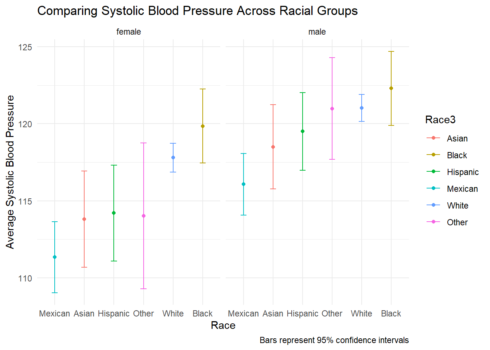
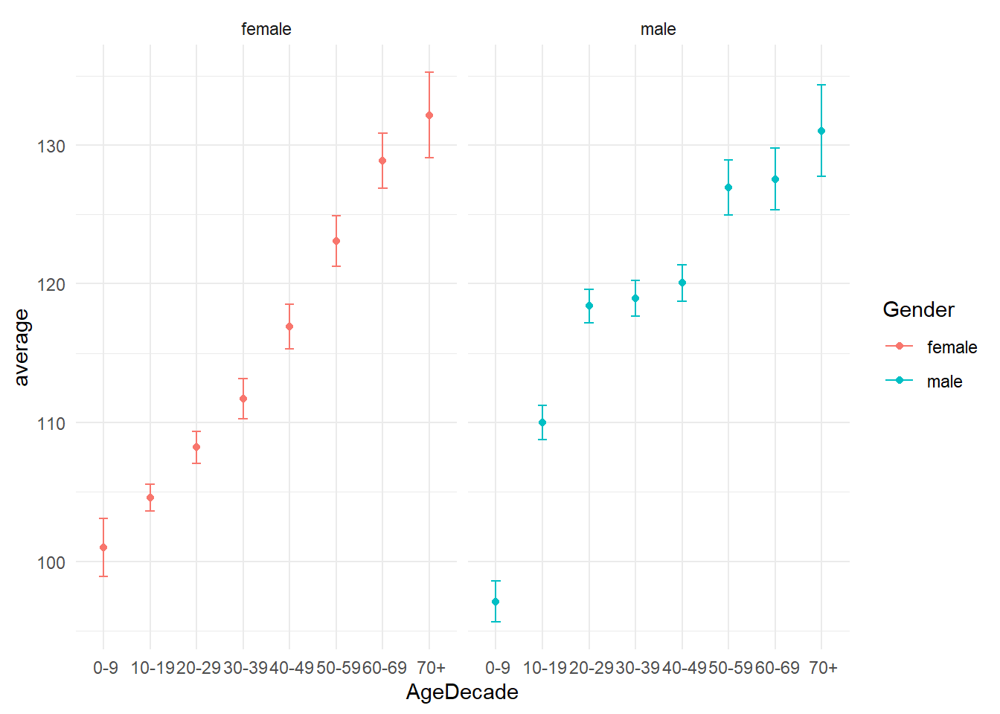
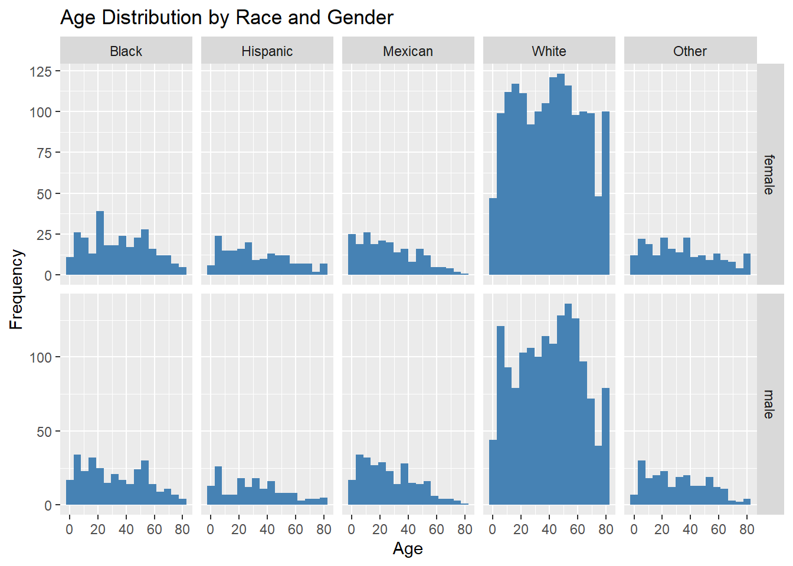
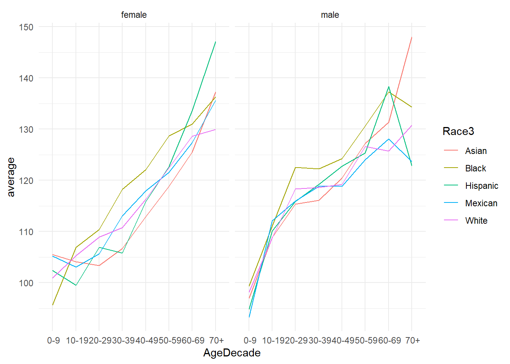
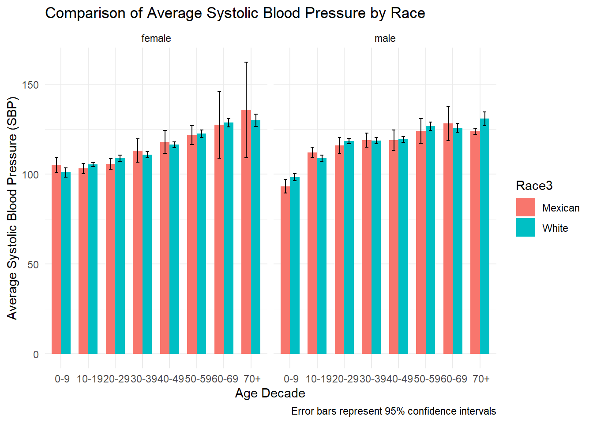

x <- 100; x <- sqrt(x); log10(x)Problem set 2
Total points: 16.
In these exercises, we will explore a subset of the NHANES dataset to investigate potential differences in systolic blood pressure across groups defined by self reported race.
Instructions
For each exercise, we want you to write a single line of code using the pipe (
|>) to chain together multiple operations. This doesn’t mean the code must fit within 80 characters or be written on a single physical line, but rather that the entire sequence of operations can be executed as one continuous line of code without needing to assign intermediate values or create new variables. Use this within reason. If you have a really complex calculation as a subprocess, you can create a new line of code.All of your code and answers for this pset should be submitted as a single file
pset-02-R-data-analysis.qmd.For example, these are three separate lines of code:
Whereas this is considered one line of code using the pipe:100 |>
sqrt() |>
log10()Copy this quarto document to edit your code for this assignment. Upon submission, you should submit both the qmd file and the rendered file generated as an html document.
For the exercises that ask to generate a graph, show the graph as well.
For exercises that require you to display tabular results, use the
kablefunction to format the output as a clean, readable table. Do not display the raw dataframe directly—only show the nicely formatted table usingkable.Use only two significant digits for the numbers displayed in the tables.
Submit both the html and the qmd files using Git.
You will need the following libraries:
library(dplyr)
library(tidyr)
library(forcats)
library(ggplot2)
library(knitr)
library(NHANES)
options(digits = 2)- The
.qmdfile must be able to render properly on the GSI’s computer. They will already have the necessary packages installed, so there is no need to include code for installing packages. Just focus on writing the code that uses these packages.
Exercises
- (1 point) Filter the
NHANESdata to only include survey year 2011-2012. Save the resulting table indat. This table should have 5,000 rows and 76 columns and can be accessed via the variableNHANES.
# Filter NHANES data for the years 2011-2012
dat <- NHANES |>
filter(grepl("2011|2012", SurveyYr)) - (1 point) Using
dat, compute the average and standard deviation (SD) for the combined systolic blood pressure (SBP) (given byBPSysAve) reading for males and females separately. Show us a data frame with two rows (female and male) and two columns (average and SD).NAvalues should be removed.
# Compute the average and standard deviation for SBP for males and females
dat |>
group_by(Gender) |>
summarise(
average = mean(BPSysAve, na.rm = TRUE),
SD = sd(BPSysAve, na.rm = TRUE)
) |>
kable()| Gender | average | SD |
|---|---|---|
| female | 117 | 18 |
| male | 120 | 17 |
- (1 point) Because of the large difference in the average between males and females, we will perform the rest of the analysis separately for males and females.
Compute the average and SD for SBP for each race variable in column Race3 for females and males separately. The resulting table should have four columns for sex, race, average, and SD, respectively, and 12 rows (one for each strata). Arrange the result from highest to lowest average.
# Compute the average and SD for SBP by race and gender
dat |>
filter(!is.na(Race3)) |>
group_by(Gender, Race3) |>
summarise(
average = mean(BPSysAve, na.rm = TRUE),
SD = sd(BPSysAve, na.rm = TRUE),
.groups = "drop"
) |>
arrange(desc(average)) |>
kable()| Gender | Race3 | average | SD |
|---|---|---|---|
| male | Black | 122 | 19 |
| male | White | 121 | 17 |
| male | Other | 121 | 14 |
| female | Black | 120 | 19 |
| male | Hispanic | 120 | 15 |
| male | Asian | 118 | 15 |
| female | White | 118 | 18 |
| male | Mexican | 116 | 15 |
| female | Hispanic | 114 | 19 |
| female | Other | 114 | 18 |
| female | Asian | 114 | 18 |
| female | Mexican | 111 | 15 |
4. (1 point) Repeat the previous exercise but add two columns to the final table to show a 95% confidence interval for the mean. Specifically, add columns with the lower and upper bounds of the interval with names `lower` and `upper`, respectively. The formula for these values is
$$
\bar{X} \pm 1.96 \, s / \sqrt{n}
$$
with $\bar{X}$ the sample average and $s$ the sample standard deviation. This table will simply add two more columns to the table generated in the previous exercise: one column for the lower and upper bound, respectively.
::: {.cell}
```{.r .cell-code}
dat |>
filter(!is.na(Race3)) |>
group_by(Gender, Race3) |>
summarise(
average = mean(BPSysAve, na.rm = TRUE),
SD = sd(BPSysAve, na.rm = TRUE),
n = sum(!is.na(BPSysAve)),
lower = average - 1.96 * SD / sqrt(n),
upper = average + 1.96 * SD / sqrt(n),
.groups = "drop"
) |>
arrange(desc(average)) |>
kable()| Gender | Race3 | average | SD | n | lower | upper |
|---|---|---|---|---|---|---|
| male | Black | 122 | 19 | 244 | 120 | 125 |
| male | White | 121 | 17 | 1361 | 120 | 122 |
| male | Other | 121 | 14 | 69 | 118 | 124 |
| female | Black | 120 | 19 | 241 | 117 | 122 |
| male | Hispanic | 120 | 15 | 128 | 117 | 122 |
| male | Asian | 118 | 15 | 120 | 116 | 121 |
| female | White | 118 | 18 | 1417 | 117 | 119 |
| male | Mexican | 116 | 15 | 221 | 114 | 118 |
| female | Hispanic | 114 | 19 | 145 | 111 | 117 |
| female | Other | 114 | 18 | 53 | 109 | 119 |
| female | Asian | 114 | 18 | 122 | 111 | 117 |
| female | Mexican | 111 | 15 | 160 | 109 | 114 |
:::
- (1 point) Make a graph of showing the results from the previous exercise. Specifically, plot the averages for each group as points and confidence intervals as error bars (use the geometry
geom_errorbar). Order the groups from lowest to highest average (the average of the males and females averages). Usefacet_wrapto make a separate plot for females and males. Label your axes with Race and Average respectively, add the title Comparing systolic blood pressure across groups, and the caption Bars represent 95% confidence intervals.
# Prepare the data and compute the mean, standard deviation, and confidence intervals
dat_summary <- dat %>%
filter(!is.na(Race3)) %>%
group_by(Gender, Race3) %>%
summarise(
average = mean(BPSysAve, na.rm = TRUE), # Calculate the average systolic blood pressure, excluding missing values
SD = sd(BPSysAve, na.rm = TRUE), # Calculate standard deviation
n = sum(!is.na(BPSysAve)), # Count the number of valid data points
lower = average - 1.96 * SD / sqrt(n), # Calculate the lower bound of the 95% confidence interval
upper = average + 1.96 * SD / sqrt(n), # Calculate the upper bound of the 95% confidence interval
.groups = "drop"
)
# Create the plot using ggplot2
plot <- ggplot(dat_summary, aes(x = fct_reorder(Race3, average), y = average, color = Race3)) +
geom_point() + # Add points to the plot
geom_errorbar(aes(ymin = lower, ymax = upper), width = 0.2) + # Add error bars
facet_wrap(~Gender) + # Facet by gender
labs(
x = "Race",
y = "Average Systolic Blood Pressure",
title = "Comparing Systolic Blood Pressure Across Racial Groups",
caption = "Bars represent 95% confidence intervals"
) +
theme_minimal() # Use a minimal theme for a clean look
print(plot) # Display the plot
- (2 points) In the plot above we see that the confidence intervals don’t overlap when comparing the
WhiteandMexicangroups. We also see a substantial difference betweenMexicanandHispnanic. Before concluding that there is a difference between groups, we will explore if differences in age, a very common confounder, explain the differences.
Ignoring race for now, create a table like the one in the previous exercise but show the average SBP by sex and age group (AgeDecade) including upper and lower bounds. The groups should be ordered chronologically. As before make a separate plot for males and females. Make sure to filter our observations with no AgeDecade listed.
library(dplyr)
library(ggplot2)
# Preprocess the data and calculate statistics for systolic blood pressure by gender and age decade
processed_data <- dat %>%
filter(!is.na(AgeDecade)) %>%
group_by(Gender, AgeDecade) %>%
summarise(
average = mean(BPSysAve, na.rm = TRUE), # Calculate the mean, excluding NA values
SD = sd(BPSysAve, na.rm = TRUE), # Calculate the standard deviation
n = sum(!is.na(BPSysAve)), # Count non-NA entries for accuracy in calculations
lower = average - 1.96 * SD / sqrt(n), # Lower bound of the 95% confidence interval
upper = average + 1.96 * SD / sqrt(n), # Upper bound of the 95% confidence interval
.groups = "drop" # Avoid regrouping post summarisation
)
# Visualize the data with ggplot2
plot <- ggplot(processed_data, aes(x = AgeDecade, y = average, color = Gender)) +
geom_point() + # Plot the average points
geom_errorbar(aes(ymin = lower, ymax = upper), width = 0.2) + # Add error bars for confidence intervals
facet_wrap(~Gender) + # Create a separate plot for each gender
theme_minimal() # Apply a minimalistic theme for a clean and professional look
print(plot) # Display the plot
- (2 points) We note that for both males and females the SBP increases with age. To explore if age is indeed a confounder we need to check if the groups have different age distributions.
Explore the age distributions of each Race3 group to determine if the groups are comparable. Make a histogram of Age for each Race3 group and stack them vertically. Generate two columns of graphs for males and females, respectively. That is, create a grid of plots. In the histograms, create bins increments of 5 years up to 80. Make sure to give each row a seperate y-scale.
Below the graph, comment on what you notice about the age distributions and how this can explain the difference in BP between the White and Mexican groups.
if("Gender" %in% names(dat) && "Race1" %in% names(dat) && any(!is.na(dat$Gender)) && any(!is.na(dat$Race1))) {
dat %>%
ggplot(aes(x = Age)) +
geom_histogram(bins = 16, fill = 'steelblue') +
facet_grid(Gender ~ Race1, scales = "free_y") +
labs(title = "Age Distribution by Race and Gender", x = "Age", y = "Frequency")
} else {
print("Missing or invalid data for 'Gender' or 'Race1'. Please check data integrity.")
}
- (1 point) Summarize the results shown in the graph by compute the median age for each
Race3group and the percent of individuals that are younger than 18. Order the rows by median age. The resulting data frame should have 6 rows (one for each group) and three columns to denote group, median age, and children respectively.
# Summarize data by race to calculate median age and the percentage of children
data_summary <- dat %>%
group_by(Race3) %>%
summarise(
median_age = median(Age, na.rm = TRUE), # Calculate the median age, ignoring NA values
children = mean(Age < 18, na.rm = TRUE) * 100 # Calculate the percentage of children under 18
) %>%
arrange(median_age) # Arrange the data by median age in ascending order
# Output the data as a formatted table using knitr's kable function
data_summary %>%
kable() # Create a markdown table for better readability and presentation| Race3 | median_age | children |
|---|---|---|
| Mexican | 22 | 40 |
| Other | 22 | 38 |
| Hispanic | 28 | 31 |
| Black | 33 | 29 |
| Asian | 35 | 25 |
| White | 41 | 22 |
- (1 point) Given the age distribution between two populations, we can’t conclude that there are differences in SBP based just on the population averages. The observed differences are likely due to age differences rather than genetic differences. We will therefore stratify by group and then compare SBP. But before we do this, we might need redefine
datto avoid small groups.
Write code that computes the number of observations in each gender, age decade, and race combination. Show the groups with less than five observations. Make sure to remove the rows with no BPSysAve measurments before calculating the number of observations. Show a table with four columns representing gender, age stratum, group, and the number of individuals in that group. Make sure to include combinations with 0 individuals (hint: use complete).
# Process and summarize the data to identify groups with fewer than 5 observations
data_summary <- dat %>%
filter(!is.na(BPSysAve)) %>%
complete(Gender, AgeDecade, Race3) %>%
group_by(Gender, AgeDecade, Race3) %>%
summarise(
count = n(), # Count the number of observations in each group
.groups = "drop" # Remove grouping structure after summarization
) %>%
filter(count < 5) # Keep only groups with fewer than 5 observations
# Output the filtered data as a formatted table
data_summary %>%
kable() # Create a nicely formatted markdown table| Gender | AgeDecade | Race3 | count |
|---|---|---|---|
| female | 0-9 | Asian | 2 |
| female | 40-49 | Other | 4 |
| female | 50-59 | Other | 2 |
| female | 60-69 | Other | 2 |
| female | 70+ | Mexican | 3 |
| female | NA | Black | 4 |
| female | NA | Hispanic | 3 |
| female | NA | Mexican | 1 |
| female | NA | Other | 1 |
| male | 0-9 | Asian | 2 |
| male | 0-9 | Other | 2 |
| male | 70+ | Asian | 3 |
| male | 70+ | Mexican | 3 |
| male | 70+ | Other | 1 |
| male | NA | Asian | 1 |
| male | NA | Black | 4 |
| male | NA | Hispanic | 3 |
| male | NA | Mexican | 1 |
| male | NA | Other | 2 |
(1 point) Based on the observations made in the previous exercise, we will redefine
datbut with the following:- As before, include only survey year 2011-2012.
- Remove the observations with no age group reported.
- Remove the 0-9 age group and drop it as a factor in
AgeDecade. - Combine the 60-69 and 70+ age groups into a 60+ group.
- Remove observations reporting
OtherinRace3and drop it as a factor. - Rename the variable
Race3toRace.
Hints:
- Note that the levels in
AgeDecadestart with a space. - You can use the
fct_collapsefunction in the forcats to combine factors.
# Preprocess the NHANES dataset for analysis
dat <- NHANES %>%
filter(
grepl("2011|2012", SurveyYr), # Select data from the years 2011 and 2012
!is.na(AgeDecade), # Exclude rows where AgeDecade is missing
Race3 != "Other" # Exclude entries categorized as "Other" in Race3
) %>%
mutate(
AgeDecade = fct_collapse(AgeDecade, `60+` = c("60-69", "70+")), # Collapse age decades into a '60+' category
Race = fct_drop(Race3) # Remove unused levels from Race3 and rename it to 'Race'
)Warning: There was 1 warning in `mutate()`.
ℹ In argument: `AgeDecade = fct_collapse(AgeDecade, `60+` = c("60-69",
"70+"))`.
Caused by warning:
! Unknown levels in `f`: 60-69, 70+- (1 point) Create a plot that shows the average BPS for each age decade. Show the different race groups with color and lines joining them. Generate two plots: one for males and one for females.
# Calculate the average systolic blood pressure (BPSysAve) by gender, age decade, and race
data_summary <- dat %>%
group_by(Gender, AgeDecade, Race3) %>%
summarise(
average = mean(BPSysAve, na.rm = TRUE), # Compute the average, excluding missing values
.groups = "drop" # Remove the grouping structure after summarization
)
# Create a line plot of average BPSysAve by AgeDecade for each race and gender
plot <- ggplot(data_summary, aes(x = AgeDecade, y = average, color = Race3, group = Race3)) +
geom_line() + # Add lines to connect data points for each race within an age decade
facet_wrap(~Gender) + # Create separate plots for each gender
theme_minimal() # Use a minimal theme for a clean and professional appearance
print(plot) # Display the plot
- (2 points) Based on the plot above, pick two groups that you think are consistently different, and remake the plot from the previous exercise but just for these two groups. Add confidence intervals, and remove the lines. Put the confidence intervals for each age stratum next to each other, and use color to represent the two groups. Comment on your finding.
# Filter data for "White" and "Mexican" races and calculate summary statistics
data_summary <- dat %>%
filter(Race3 %in% c("White", "Mexican")) %>%
group_by(Gender, AgeDecade, Race3) %>%
summarise(
average = mean(BPSysAve, na.rm = TRUE), # Calculate the average SBP, excluding missing values
SD = sd(BPSysAve, na.rm = TRUE), # Calculate the standard deviation
n = sum(!is.na(BPSysAve)), # Count non-NA values for sample size
lower = average - 1.96 * SD / sqrt(n), # Lower bound of the 95% confidence interval
upper = average + 1.96 * SD / sqrt(n), # Upper bound of the 95% confidence interval
.groups = "drop" # Prevent regrouping after summarisation
)
# Create a bar plot with error bars to compare systolic blood pressure across age decades
plot <- ggplot(data_summary, aes(x = AgeDecade, y = average, ymin = lower, ymax = upper, fill = Race3)) +
geom_bar(stat = "identity", position = position_dodge(), width = 0.7) + # Draw bars for average SBP
geom_errorbar(position = position_dodge(width = 0.7), width = 0.25) + # Add error bars for confidence intervals
facet_wrap(~Gender) + # Separate plots by gender
theme_minimal() + # Apply a minimal theme for clarity
labs(
title = "Comparison of Average Systolic Blood Pressure by Race",
x = "Age Decade",
y = "Average Systolic Blood Pressure (SBP)",
caption = "Error bars represent 95% confidence intervals"
)
print(plot) # Display the plot
- (1 point) For the two groups that you selected above, compute the difference in average SBP between the two groups for each age strata. Show a table with three columns representing age strata, difference for females, difference for males.
# Prepare the data: Filter, summarize, reshape, and calculate differences
data_analysis <- dat %>%
filter(Race3 %in% c("White", "Mexican")) %>%
group_by(Gender, AgeDecade, Race3) %>%
summarise(
average = mean(BPSysAve, na.rm = TRUE), # Compute the average systolic blood pressure excluding NAs
.groups = "drop" # Prevent regrouping after summarization
) %>%
pivot_wider(
names_from = Race3,
values_from = average
) %>%
mutate(
difference = White - Mexican # Calculate the difference between White and Mexican groups
) %>%
select(AgeDecade, Gender, difference) %>%
pivot_wider(
names_from = Gender,
values_from = difference
) %>%
kable() # Output the data as a formatted markdown table
# Print the table
print(data_analysis)
|AgeDecade | female| male|
|:---------|------:|-----:|
|0-9 | -4.33| 4.94|
|10-19 | 2.18| -3.32|
|20-29 | 3.25| 2.36|
|30-39 | -2.27| -0.23|
|40-49 | -1.61| 0.38|
|50-59 | 0.88| 2.57|
|60-69 | 1.31| -2.34|
|70+ | -5.74| 7.13|